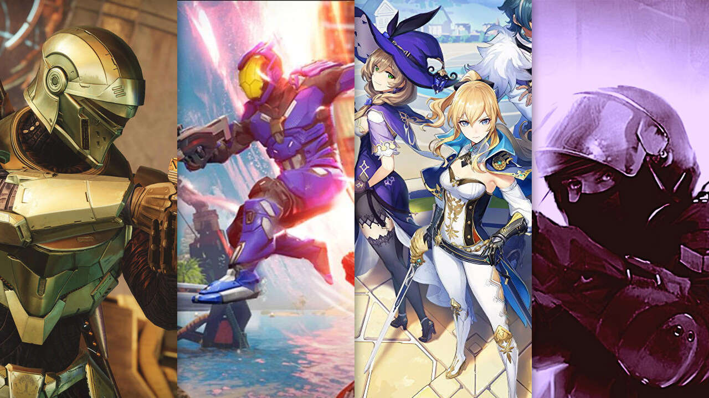

¿Cuáles son los mejores videojuegos de lo que llevamos de 2022? Recopilamos los títulos más destacados de todos los que se han publicado hasta ahora.

Juegos
God of war
En esta entrega un nuevo comienzo para el personaje y en una ambientación nórdica, ofreciéndonos una perspectiva más madura y realista de la mitología de dioses y monstruos milenarios habitual en la serie de títulos. En God of War, Kratos será un guerrero más curtido y pasivo, pues tendrá que desempeñar el rol de padre en un frío y hostil escenario, al que parece haberse retirado para olvidar su pasado.
Horizon Forbidden West
Horizon 2: Forbbiden West es la segunda parte de Horizon: Zero Dawn, el videojuego de acción en tercera persona y mundo abierto. Auspiciado por Sony, y como una de las nuevas sagas que han demostrado su poder y presencia en la sobremesa, nos narrará una épica historia de ciencia ficción postapocalíptica en la que la humanidad intenta sobrevivir tras la aparición de una serie de máquinas y robots que han sustituido a los seres vivos como especie dominante en la Tierra.
Kirby y la tierra olvidada
Kirby nuestro héroe rosado favorito, tendrá un papel protagonista en él a través de su próxima aventura: Kirby y la tierra olvidada. Un juego que irradia esa esencia tan única y especial de los juegos de Nintendo, capaz de llenar el ojo con su propia carta de presentación y encandilar en lo jugable a jugadores grandes y pequeños. Reteniendo lo mejor de sus aventuras plataformeras y transmitiendo esa clase de diversión y aventura casi patentable de Nintendo.
Dying Light 2
Dying Light 2 Stay Human propone a los jugadores hacerse un hueco la Ciudad, uno de los últimos grandes asentamientos de la humanidad, está siendo destruida por las luchas internas. Por suerte hay esperanza entre el caos, y corresponde al protagonista descubrir los oscuros secretos de quienes tienen poder, elegir bando y decidir su destino. "Y, hagas lo que hagas, no pierdas tu humanidad".
Monster Hunter Rise: Sunbreak
Si ya el juego base era altamente recomendable, la expansión Monster Hunter Rise: Sunbreak lo eleva a un nuevo nivel. Este capítulo extra brinda más contenido a quienes se quedaron con ganas de más en la campaña original, introduciendo desafiantes retos para continuar cazando durante meses.
Lego Star Wars: The Skywalker Saga
LEGO Star Wars: La Saga Skywalker, desarrollado por TT Games y editado por Warner Bros. para PC, PlayStation 4, Xbox One, PlayStation 5, Xbox Series y Switch, es una aventura de acción en la que recorremos las nueve películas de la saga basadas en el universo Skywalker. Disfruta de las nueve películas de la saga en un videojuego completamente innovador. Viaja por el espacio y visita los planetas más famosos de la saga en cualquier orden y en cualquier momento. ¡Una galaxia muy, muy lejana que jamás había sido tan divertida!
Forza Horizon 5
En esta entrega, las expediciones serán la gran novedad para el modo un jugador, mientras que el juego se irá ampliando por temporadas que traerán nuevos contenidos y prometen variar el propio mapa del juego. Las Historias de Horizon, que ya debutaron en el anterior juego, serán ahora más importantes y numerosas. Para el modo online, se sumarán y expandirán todos los contenidos que se han ido incorporando en los últimos años, como el Battle Royale, el Forza Arcade, el Eventhub y la posibilidad de crear tus propias pruebas personalizadas.
Nos podes seguir en: